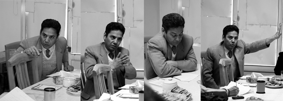

|
|

از سلطانی، ستوده، محمّدی می گوییم ...
پنج شنبه25 اسفند 1390
تغییر برای برابری - سخن گفتن از حق و دفاع از شعله آن در تاریکی وظیفه ماست؛ این را از چشم ها و خنده های وکلایمان آموختیم، پیش از آنکه قانون را بدانیم. مجموعه زیر یادداشت هایی کوتاه از اعضای خانواده، موکلان و دوستانی است که به احکام صادره برای عبدالفتاح سلطانی، نسرین ستوده و نرگس محمدی معترضند و خواهان تغییر آن هستند. با امید فردایی که در آن زنجیری نباشد مگر زنجیره دستانِ آزاد ما تا در کنار یکدیگر، آنچه را می خواهیم بسازیم.
۱- زیر آسمان آزادی / مائده سلطانی
گاهی شبها پیش پدرم در سلول میخوابم و قبل از خواب با او ساعتی حرف میزنم. آخرین شبی که در آغوشش خوابیدم به او از این گفتم که دیوارهای اوین ما را از هم جدا نکرده و او برای من امروز بیشتر از همیشه وجود دارد، از این که راهی که فکرش را میکردیم آسان نبود، اما مقاومت ما چه بی نظیر! از این که مادر چه اسطورهای شد در این جاده سنگلاخی و عدالت چه پیکری دست نیافتنی. از این که شعرهایش در زندان چه نوایی است در روزهای تکصدایی، گفتم که نرگس و نسرین با بچه های کوچکشان لحظهای از خاطرم نمی روند، گفتم که ۱۸ سال عددی است بیهوده برای مدعیانش و ما سخت منتظریم که همه با هم باز گردید...
پدر موهایم را مثل همیشه نوازش کرد و گفت بر میگردم تا دوباره با هم سفر کنیم، با کوله باری پر در کوهپایهها سرود بخوانیم و گوش به صدای رودبار دهیم. این بار زیر آسمان آزادی چادر می زنیم و با هم به تماشای سوسوی ستارگانش می نشینیم. آسوده بخواب دخترکم که سپیده دم نزدیک است...
۲- برای وکیلی که مستمر باقی مانده است / پروین اردلان
شب یلدای ۱۳۸۷ است. به مناسبت دریافت اولین جایزه حقوق بشر نورنبرگ به دیدن عبدالفتاح سلطانی رفته ایم. دورانی است که مدام با دادگاه و بازجو و قاضی سروکار داریم و مدام در موقعیت متهم از حمایت وکلایی چون او بهره مندیم. درباره تاثیر چنین جوایزی می گوید:« همین که عدهای در خارج از ایران به فکر تشویق فعالان حقوق بشر هستند، جای تقدیر دارد و همین که آدم احساس میکند دیگران هم به فکر او هستند و تشویقش میکنند که بتواند به اهداف عالی که دارد ادامه بدهد و مستمر باقی بماند، جای تقدیر دارد...» و همان شب برایمان می خواند :« چندان شب یلدای وطن طول کشید/ کز آمدن سپیده نومید شدیم، شبگیر ز خاک گور برخاست و ما / پنداشته هان ! سپیده از راه رسید..»
سه سال ازآن شب می گذرد و ما همچنان نگران سپیده و نظاره گر شبگیرهایی هستیم که از گور برمی خیزند و وکلای شجاع مان را یک به یک دربند، تبعید و خانه نشین می کنند؛ در عوض کاریکاتوری از وکیل را با تولید سریال های تلویزیونی در برابرمان تصویر می کنند. براستی آیا می توان وکیلی چون سلطانی را با صدور حکم های 18 ساله زندان و تبعید از «استمرار» انداخت؟
با عبدالفتاح سلطانی در کانون مدافعان حقوق بشر و شورای ملی صلح آشنا شدم، شورایی را که جمع رنگارنگی از فعالان مدنی، سیاسی، قومیتی، مذهبی، سیاسی و زنان را در خود جای می داد. یکی از آموزه های او و دیگر وکلای حقوق بشر، شکستن خط کشی های دیکته شده بود. از او وکلایی چون او، نسرین ستوده و محمد شریف ومدافعانی چون نرگس محمدی،... یاد گرفتیم که وکیل و مدافع حقوق بشر وظیفه اش دفاع از متهم است، فارغ از هرگونه گرایش های سیاسی، مذهبی، ملیتیِ خودش و متهم. آموزه ای آسان که آسان به دست نیامد، وکلایی چون او با قبول وکالت کسانی که پرونده شان حساس و خط قرمز بیان می شد هم هزنیه دفاع را پرداختند و هم به ما یاد دادند که در فعالیت های جنبشی مان دیکته های جاخوش کرده را پاک کنیم. چنین وکیلی حتی در زندان هم استمرار دارد!
کتاب «حقوق به زبان ساده، حقوق متهم» نوشته او و مهناز پراکند در مقابلم هست. یادگار روزهایی است که به واسطه همراهی و همدلی وکلایمان در جنبش، یا آشنایی با حقوق شهروندی و حقوق متهم در کارگاه های شهروندی عبدالفتاح سلطانی "حق سکوت" و شهامت دفاع کردن را یاد می گرفتیم. آشنایی با حقوق مان به عنوان متهم ،مایه قدرت گیری مان در برابر بازجو و آسودگی مان در زندان بود. هم او بود که به ما یاد دادکه «آشنا بودن متهم با قوانین در روند بازجویی و رفتار بازجویان تاثیر بسیاری دارد و آموزش حقوق افراد به زبان ساده، از میزان آسیب پذیری آنها می کاهد.» و اگر یگ شهروند بداند « بیش از آن که تکلیف داشته باشد حق دارد، بیشتر می تواند در مقابل اقدامات غیرقانونی مقاومت مدنی کند». او بود که به ما یاد داد «از ترس یک فشار ، فشار دیگری را تحمل نکنیم» وگرنه قافیه را باخته ایم! از سلطانی یادگرفتیم «آنچه تعیین کننده است قدرت مقابله ماست»، قدرتی که بهای آن ۱۸ سال زندان و تبعید بوده است تنها به دلیل این هراس ساده: سلطانی «مستمر باقی مانده» است!
۳- کانون مدافعان حقوق بشر وجدان جامعه ایرانی / رضا علیجانی
کانون مدافعان حقوق بشر از بدو تاسیس سعی کرد با برخوردی منطقی و قانونی نقش وجدان حقوق بشری جامعه ایران را ایفا کند. این کانون هم گزارشهای منصفانه، بیطرفانه و واقع گرایانهای از وضعیت حقوق بشر در ایران می داد (گزارش هایی که به خاطر همین ویژگی اش مرجع استناد نهادهای بین المللی قرار می گرفت) و هم آموزشهای حقوق بشری در حوزه های گوناگون (حوزه زنان ، حقوق متهمان و ...) داشت. هم به لحاظ عملی وکالت بسیاری متهمان بی گناه و تحت فشار حاکمان نظامی - امنیتی را برعهده می گرفت و هم در حد توان به خانواده های زندانیانی که قربانی یک دستگاه امنیتی - قضایی سرکوبگر قرارگرفته بودند یاری و کمک می کرد.
کانون با این همه تلاش از مسائل عام تری چون مسئله انتخابات آزاد و یا تهدید جنگ غافل نبود و دست به تلاش بزرگی برای کنار هم قرار دادن طیف های مختلف سیاسی برای کسب صلح و آزادی زد. اما دشمنان آزادی و صلح این تلاشهای صادقانه و دلسوزانه و ملی و انسان دوستانه را بر نمی تافتند و هجوم به افراد و حتی ساختمان کانون را در دستور کار قرار دادند.
همه فعالیتهایی که برشمردم به تلاش عدهای معدود و هم یاری عده محدود دیگری صورت می گرفت. جمعی که امروزه سرنوشت شان حکایت آزادی خواهی و مطالبه حقوق بشر در ایران است. آخرین داستان این تراژی غم بار حکم سنگین وکیل شجاع و حق طلب آقای سلطانی و قطعی کردن حبس زن شجاع نرگس محمدی است که سلامتی اش را در این راه گذاشت و در وضعیتی که باید دو فرزند خردسال اش را تیمار کند خود نیزباید مورد آزار مستمر همان دشمنان آزادی قرار گیرد. دیگر عزیزان و همکاران رسمی و غیر رسمی این کانون نیز یا در زندان اند و یا آواره از وطن. تن مجروح کانون اما باز با زبان خانم عبادی حق گویی می کند وهم چنان نقش وجدان تن خسته و رنجور جامعه بزرگ ایرانی را دارد.
آیا به جز انسان های تبهکار کسی هست که بخواهد صدای وجدانش را سرکوب و خاموش کند؟
۴-زندگی یعنی مقاومت، تلاش و مبارزه / محبوبه حسین زاده
آقای سلطانی، برای ما موکلانتان، ایران سرزمین امنتری برای فعالیت های اجتماعی و تلاش برای حقوق شهروندی و برابری بود؛ هرگز فراموش نمیکنم غروب سرد زمستان را که وارد دفترتان شدم تا وکالتم را برعهده بگیرید؛ هنوز عصبانی و خشمگین بودم از تمام اتفاقاتی که در دو هفته زندان افتاده بود و با کوچکترین تلنگری اشکهایم جاری میشد؛ اما هرگز هم فراموش نمی کنم یکی دوساعت بعد را که از دفترتان بیرون آمدم. نفس عمیقی کشیدم و رو به آسمان سرد زمستان گفتم: زندگی یعنی همین؛ یعنی مقاومت، تلاش و مبارزه برای رسیدن به حقوق انسانی و دنیایی بهتر.
وقتی وکالتم را رایگان برعهده گرفتید، میدانستم که سرتان خیلی شلوغ است اما وقت گذاشتید و حقوقی را که به عنوان یک متهم از آن برخوردارم، برایم توضیح دادید. تاکید داشتید که وقتی به عنوان فعال اجتماعی یا یا روزنامه نگار در ایران کار میکنیم، باید ابتدا حقوق شهروندی و حتی حقوق متهم را بدانیم که در مواقع ضروری بتوانیم از حقوق خودمان دفاع کنیم. با آرامش توضیح دادید که جلسه دادگاه چگونه برگزار میشود و چگونه باید از خودم دفاع کنم. برای اولین بار بود که دیگر در تمام مدتی که در راهروهای دادگاه انقلاب نشسته بودیم، اضطراب نداشتم. از شما از چند ماه زندانیتان در سلول انفرادی اوین پرسیدم. خندیدید و گفتید روزی چند ساعت توی همون سلول ورزش می کردم. ایمان داشتم که حتی اگر حکمی ناعادلانه برایم صادر کنند، شما کلیه پیگیریهای قانونی را انجام میدهید. اعتراض کردید که دادگاه صلاحیت رسیدگی به یکی از موارد اتهامی پرونده را ندارد و قاضی مجبور شد حرف شما را قبول کند.
وقتی تبرئه شدم و پرونده به خاطر همان یک مورد دیگر به دادگاه عمومی ارجاع داده شد، فراموش کردم در دادگاه شرکت کنم! اما شما فراموش نکرده بودید. در دادگاه شرکت کرده بودید و حکم تبرئه ام را هم گرفته بودید. آقای سلطانی، نمی دانم قاضی به پشتوانه کدامین مسند دائمی، به شما حکم ۱۸ سال زندان در تبعید داده است و ۲۰ سال محرومیت از وکالت؛ ولی دیر نیست که افرادی که امروز در مسند قضاوت نشستهاند، در روزهایی نه چندان دور آرزو کنند وکیلی همچون شما وکالت شان را برعهده بگیرد.
آقای سلطانی مثل همیشه پایدار بمانید و استوار.
۵-برای وکیلم آقای سلطانی/ سوسن طهماسبی
شندیم که بالاخره بعد از شش ماه حبس در انفرادی شما را به بند ۳۵۰ منتقل کردند. خوشابحال همبندی هایتان. حتما بزودی برایشان کلاس های حقوق می گذارید؛ حقوق شهروندی و حقوق متهم. آقای سلطانی؛ حالا که زحمت می کشید، بد نیست مروری هم بر حقوق زنان داشته باشید. هر چند شکی نیست که تمام دوستان ما در بند ۳۵۰ اوین حامی حقوق زنان هستند ولی خوب است باز هم مروری بر تبعیض های قانونی علیه زنان داشته باشید. مروری هم داشته باشید بر قانون اساسی. بالاخره در کل منطقه، این روزها بحث بر سر قوانین اساسی است و بد نیست اگر شما و دوستان دربندمان نظری دارید، با همسایه ها در میان بگذارید. شاید هم مدت اقامت شما در بند ۳۵۰ اوین چندان به طول نیانجامید و همان طور که آقایان حکم داده اند، شما را به برازجان منتقل کنند. خوشا بحال زندانیان برازجان که هم بند مرد شریفی مانند شما می شوند؛ مردی که حتما آنها را در مراحل پیگیری حقوفی پرونده هایشان همراهی خواهد کرد و با دلسوزی آنها را راهنمایی خواهد کرد—همانطور که بارها و بارها همه این کارها را برای فعالان حقوق زنان، حقوق بشر، دانشجویان، اقلیت های دینی و مدافعان آزادی بیان انجام دادید و همراه و حامی ما که درمانده و خسته بودیم، شدید و روحی دوباره در فعالیت ما دمیدید. باشد که زندانیان برازجان هم فارغ التحصیل دوره های حقوق شهروندی و حقوق متهم سلطانی شوند. شاید انجا که هستید بد نباشد به مباحث حقوق بشر هم بپردازید. شاید شاهد روزی باشیم که بزهکاران امروز، مدافعان حقوق بشر فردا باشند. شاید با درک بهتر حقوق بشر دیدی وسیع تر نسبت به موقعیت و گذشته خود داشته باشند و پس از آزادی کوشش کنند که فردایی بهتر برای کشورمان بسازند. مگر این نیز بخشی از اهداف حقوق بشر نیست که با بذر اگاهی هر روز حامیان جدیدی در این راه به ما بپیوندند و با پی بردن به قربانی بودن خود و نحوه قربانی شدن دیگران راهی بهتر در پیش گیرند.
آقای سلطانی، این آقایان شما را به 18سال زندان و ۲۰ سال محرومیت از فعالیت اجتماعی محکوم کرده اند، ولی نمی دانند که نمی توانند شما را از وجدانتان و از تعهدتان در پاس داری از حقوق انسانها محروم کنند. ۱۸ سال عمری است و من یقین دارم که این دوره خیلی زودتر از انچه تصور می کنند و تصور می کنیم، تمام شود. خیلی زودتر از انچه انتظار داریم، روزی فرا می رسد که شما و امثال شما بر مسندهای قضاوت کشورمان بنشینید و در آن زمان است که این آقایان، به انسانیت و وجدان شما پی خواهند برد.
۶- بیخشونتی به معنی سازشکاری نیست / آسیه امینی
پرهیز از خشونت، به معنی سازشکاری با هر رفتار غیر حقوقی نیست. در واقع فعال حقوق بشر در عین حال که مخالف خشونت است، باید در دفاع از حقوق بشر ایستادگی پیشه کند. عبدالفتاح سلطانی یکی از سرسخت ترینِ وکلا و مدافعان حقوق بشر در دفاع از حق است. او زیر بار حرف زور نمیرود و هر سه باری که طعم زندان را چشیده، تنها و تنها به خاطر ایستادگی بر سر دفاع از حقوق موکلانش بوده است. وجه دیگر شخصیت او تلاش و استفاده از هر فرصتی برای انتقال تجربهها و دانشش در حوزه حقوق به دیگران است، آن هم به زبان ساده. بسیاری از کسانی که در حوزه های اجتماعی فعالیت کرده اند، درباره حقوق شهروندی و حقوق بشر از او بسیار آموخته اند. . بدون شک در یک جامعه سالم، جای او بر تارک دانشگاه ها و مراکز آموزشی حقوق و حقوق بشر است. امیدوارم که بتوانیم این جامعه سالم را بسازیم.
به امید آزادی عبدالفتاح سلطانی و همه زندانیان باور و اندیشه
۷-از شجاعت / بهنام امینی
عبدالفتاح سلطانی را بار اول از نزدیک در بهمن ماه ۱۳۸۱ پس از آزادیام از زندان در دفترش دیدم. من در جایگاه موکل و او در جایگاه وکیل، ولی نکته مهم این بود که با وجودی که در قالبی حقوقی درباره بازجوییهایی من در زندان و سیر احتمالی پروندهام در آینده نظر می داد، با این حال ،صلابت و قاطعیتش در همان دیدار کوتاه بیشتر یک مبارز آزادیخواه را برایم تداعی میکرد تا یک وکیل. و این چهره حقیقی یک وکیل یعنی مدافع حقوق انسانی در سیستمی است که قوه قضائیه نه یک قوه مستقل بلکه بازوی مستبد حاکم در سرکوب مخالقان است. در چنین زمینهای، نه تنها کار وکالت و دفاع از حقوق بنیادین انسانی از چارچوب خشک حقوقی فراتر رفته و شکل و ماهیتی سیاسی پیدا میکند بلکه شخصیت وکیل ابعاد رمانتیکی از سنخ شجاعت و مقاومت قهرمانانه نیز مییابد محمد شریف، نسرین ستوده، ناصر زرافشان، محمد سیف زاده و محمد علی دادخواه به همراه سلطانی سالها است که وکالت را با این تعریف زندگی کردهااند و زنده نگه داشتهاند. زندان در نگاه چنین وکلای مبارزی بسیار حقیرتر از آنست که آنان را از حرکت بازدارد.
عبدالفتاح سلطانی مدتی بعد از آن دیدار به زندان افتاد .
۸- پیروزی بر اعداد / دلارام علی
روی کاغد می نویسد ، ۱۰ + ۵ + ۲ + ۱ و با هم جمع می کند و پای حکمت می نویسد ۱۸ سال، به همین راحتی. انگار که هیچ تصوری از ۱۸ سال ندارد، انگار ۱۸ عددی است که تنها از جمع چند عدد دیگر به دست آمده است و انگار سرنوشت آدم ها به همین راحتی رقم میخورد.
تو اما معنی اعداد را خوب میدانی، چرا که در طول این سالها بسیاری را از ما را از درگیری با آن رهانیدهای. امروز اما تو پشت میلههایی و ما که راز این اعداد را نمیدانیم تنها میتوانیم شهادت دهیم که مردی که امروز به ۱۸ سال زندان محکوم شده همچنان راز پیروزی بر اعداد را خوب می داند.
۹- دروغ های آن ها / ناهید میرحاج
خیلی باید سعی کنم
خیلی زیاد
تا چند کلمه از آنچه برای موکلانت انجام دادی به زبان آورم
من حرفم را با گوشهای کور می زنم
گوشهایی که نمی بینند انسان بودنت را
خانه ات را در قصه های غصه ما جا گذاشتی
و دورغهای آنها ماسید بر زبانشان
وآغاز کردند روزمرگی را
وتو بر فراز صخره ای بلند با قامتی استوار ایستاده ای
۱۰ - شوخی تلخ / رها عسگری زاده

دور اتاق، کنارهم نشسته بودیم تا شما حقوق متهم را به ما بیاموزید ... چه شوخی تلخی ! حق سکوت ... حق تفهیم اتهام ...حق داشتن وکیل ...حتی وکیل زندانی؟
دوباره مرور می کنم ! حق سکوت ؟ حق تفهیم اتهام ؟ حق داشتن وکیلی در بند ۳۵۰ اوین؟ به جرم وکالت امثال من؟ ۱۸ سال انقدر زمان زیادی است که می توانم هر روز تمام این حقوق تنها در کتاب ها آمده را مرور کنم و باور کنم که کلمات در هوا مسموم می شوند و با معنای متفاوتی به گوش من می رسند.
۱۱- از سلطانی، ستوده و محمدی / مهناز پراکند
من که افتخار گذراندن دوره کارآموزی و بعد از آن هم افتخار شاگردی عبدالفتاح سلطانی را در کارنامه شغلی خود دارم به جرأت می توانم عنوان کنم که آقای سلطانی الگو و نمونه بارز یک فعال حقوق بشر است و درزمینه کاری نیز از باسوادترین وکلا است که به بیان مسائل حقوقی به زبان ساده و تعلیم آنها به دیگران عشق میورزد. تا قبل از دستگیری دفتر وکالت ایشان نه تنها محل رجوع بسیاری از کارآموزان و وکلای جوان بود، بلکه محل مراجعه و آموزش حقوق به زبان ساده برای بسیاری از دانشجویان ، زنان و متهمین سیاسی و عقیدتی گوناگون نیز بود و به راستی که او توانایی بسیار بالایی در ساده کردن و انتقال مفاهیم حقوقی به دیگران دارد. آقای سلطانی آنقدر به آموختن و آشنا کردن دیگران به حقوق علاقه دارند که حتی در ازای مشاوره حقوقی که به مراجعین عادی میدادند ،هیچ وجهی دریافت نمیکردند و من در طول تمامی مدتی که در خدمت ایشان بودم به خاطر ندارم آقای سلطانی بابت مشاوره به مراجعینش وجهی دریافت کند. رفتار، کردار و گفتار سلطانی آئینه تمام نمای اعتقاد او به کرامت ذاتی انسان و حقوق بشر است.
یادم میآید وقتی نرگس محمدی، این مهندسی که سلامتی وکار خود را در راه تعمیق و گسترش حقوق بشر در ایران از دست داده، از زندان آزاد شده بود من به همراه آقای سلطانی و خانم دهقان به دیدنش رفتیم. از دیدن او در آن وضعیت بیمار شوکه شدیم. انتظار نداشتم چنین بلایی سر نرگس آورده باشند. نرگس قبل از بازداشت بسیار سرحال و سرزنده بود اما در آن موقع که از زندان برگشته بود در وضعیتی قرار داشت که نه می توانست دستهای خود را تکان دهد و نه پاهایش قدرت حرکت داشتند. فشار روانی ناشی از نحوه بازداشت و جدا کردن او از دو قلوهای ۳ سالهاش، بیماری دخترش که نیازمند تیمار مادر بود از یک طرف، و آنچه که در بازداشتگاه بر او گذشت از طرف دیگر او را به آن روز انداخته بودند. با تمامی این سختیها و بیماری، نرگس هرگز از پای ننشسته و راه خود را در راستای تعمیق حقوق بشر و گسترش آن در ایران ادامه می دهد.
نسرین ستوده را اولین بار در دفتر خانم غیرت دیدم و در آنجا بود که با او آشنا شدم در آن موقع او کار آموز خانم غیرت بود و من نیز کار آموز آقای سلطانی که با خانم غیرت دفتری مشترک داشتند . نسرین صبور، متین و موقر در آن مدت کوتاهی که به آن دفتر رفت و آمد می کرد احترام همه را به خود جلب کرده بود. گامهای اولیه دوستی و همکاریمان را درهمان دفتر خاطره انگیز برداشتیم و گامهای بعدی را از کانون مدافعان حقوق بشر و کمیته وکلای همکار و زنان و کودکان کانون ادامه دادیم و چه تجربه خوبی بود. اگر چه زندانی شدن نسرین ظلم بزرگی است که در حق او، همسر باوفا و فرزندان معصومش روا شده است اما از قدیم گفته اند عدو شود سبب خیر اگر خدا خواهد. زندان، نسرین را به همه دنیا شناساند و دنیا پی به گوهر وجود او برد.
۱۲- موکلان بی وکیل/ نفیسه آزاد
درهای دفترش همیشه به روی متهمان سیاسی و عقیدتی باز بود، بی هیچ چشم داشتی بسیاری را از پیچ و خم های دادگاه رد کرد و نجات داد. ما نتوانستیم در راهروهای دادگاه همراهش باشیم، نمی توانیم او را از پشت میله هایی که حقش نیست بیرون بیاوریم، تنها کاری که هنوز می توانیم نوشتن از اوست. نوشتن ما تنها شاید دوایی باشد برای درد عجز خودمان و اندک دلگرمی باشد برای او درآن سوی میله ها. شاید بشنود که فراموشش نکرده ایم.
۱۳- وقتی از دفترش بیرون آمدم / مجتبی سمیع نژاد
هنوز هوای سنگین انفرادی بند ۲ الف اوین آزارم میداد، هنوز ذهن سرگشتهام در آن اتاقهای بازجویی کاوشگرانه دنبال آسمانی میگشت پر از رهایی که هر چه میگشتم نمییافتم. هنوز آن سیلی سنگین اول بازجو، صورتام را که نه، دلام را میسوزاند، هنوز آن تهدیدهای اعدام و زندان بود که جان آینده را بالا میآورد و خط از نگرانی بر خلیج روزهای آتی بالا رنگِ سیاه را آغوش میداد. هنوز آغشته بود تن و جان و روانام به زندان و شکنجه و بهتان و چشمبند. دو سه روزی بیشتر نبود که تازه از آن سلول تنگ و تاریک آمده بودم و ترس همه چیز بود انگار. غروبی بود که پذیرایام شد، آقای وکیل نشسته بود، خانم پراکند دستیارش هم. گفت بگو و گفتم، پرسید و پاسخ دادم. صلابتی داشت نگاهاش، صلابتی داشت سخناش... انگار که دنبال تکیهگاهی بودم، جایی که تکیه کنم، کسی که دفاع کند در مقابل آن همه خشونت، آن همه بیرحمی، آن همه تهدید و آن همه نگرانی... آقای وکیل آب خنکی بود، آنقدر که وقتی از دفترش بیرون آمدم، تازه طعم آزادی زیر زبانام حبس شد، نکتهها گفت و راهها، گفت یا این و یا آن و یا همان، همان شد راه من در بیدادگاههای آینده، یادم داد که صلابت داشته باشم، یادم داد که حق با من است، یادم داد که حق گرفتنی است، یادم داد که باید بایستم و نترسم... آقای وکیل، آقای عبدالفتاح سلطانی، ممنون که بودی، ممنون که ایستاده زندگی کردن را در همان فرصت کوتاه یادم دادی، ممنون که تکیه گاهم شدی، ممنون که کاری کردی بی دفاع نباشم.
۱۴-خودکار به دست نشسته و منتظرند / ناهید ج
جای تاسف است که برای رسیدن به حقوق شهروندی مان باید حقوق متهم را از بر باشیم پنج شنبه ۱۷ مرداد سال ۱۳۸۷ ساعت ۹ صبح . دومین بار است که در این کارگاه شرکت می کنم. دور تا دور میزهایی که به هم چسبیده اند، صندلیهایی است که بر روی آنها شرکت کنندگان تا کارگاه شروع شود. آقای سلطانی شروع می کند: حقوق متهم
متهم کیست؟ گمان می رود مجرم باشد. مجرم کیست؟ ثابت شده که مجرم است. مقررات امور متهم: "همه ی افراد (مامور، قاضی و ...) در یک چهارچوب حرکت کنند که مبادا گناهکاری بیش از آنچه قانون مقرر کرده مجازات شود یا بی گناهی مجازات شود". در این مقررات حق متهم را در نظر می گیرند تا قدرتمندان حقوق متهم را تضییع نکنند. قوانین حقوق بشر می گوید حقوق متهم باید حفظ شود. اولین حقی که متهم دارد تفهیم اتهام و دومین حقش دلایل اتهام است، بدون دلیل تفهیم اتهام غیر قانونی است. دلیل دستگیری باید مشخص باشد تا متهم بتواند از خود دفاع کند. هر اقراری بیانگر واقعیت نیست، اقراری که به زور و با تحت فشار قرار دادن متهم بدست آمده باشد بی اعتبار است و غیر قانونی است. تفتیش عقاید ممنوع است، هیچ مقامی حق ندارد در مورد عقاید متهم بپرسد. بازپرس حق سوال کردن در رابطه با مسائل خصوصی متهم را ندارد. حق داشتن وکیل از حقوق مسلم هر متهمی است و ضرورت دارد. متهم حق ملاقات با وکیل و خانواده اش را دارد و سلب این حق فشار روحی و روانی به متهم وارد می آورد. نگهداری زندانی در سلول انفرادی غیر قانونی است. بازجو حق ندارد از متهم سوالهای تلقینی یا القایی بپرسد. و ...
قصدم از نوشتن این چند سطر یادآوری حقوق متهم بود که آقای سلطانی با صبر و شکیبایی برای شرکت کنندگان توضیح می دادند و همینطور پاسخگوی پرسشهای آنها بودند؛ آقای سلطانی مصداق برهم زدن نظم عمومی چیست؟ نشر اکاذیب کدام است؟ سیاه نمایی به چه معناست؟ آیا متهم می تواند برای دفاع از خود به اصول قانون اساسی استناد کند؟ احضار تلفنی قانونی است؟ و سوالها پایانی نداشت شاید به دلیل اینکه جواب ها بسیار تعجب آور به نظر می آمد! ولی در نهایت آنچه که دستگیرمان شد این بود که متاسفانه برای رسیدن به حقوق شهروندی مان باید حقوق
متهم را از بر باشیم.به امید آزادی وکلای در بند.
۱۵- او که الفبا را خوب میدانست/ نیلوفر گلکار
فعلها مهم هستند. فعلها، فعلها. به زندان میبرنت، به دادگاه میروی، حکمت را میدهند. به دادگاه میروی، خودت با پای خودت میروی و با تمام وجود میخواهی که نروی. نه چون گناهکاری بلکه چون میدانی در این دادگاه داد نیست و بیداد است. قانون حتا قانون رسمی هم نیست و معلوم نیست اینکه هست چیست. دادگاه برگزار شد و به وکلای همراهم که از همکاران و کارآموزان آقای سلطانی بودند گفتم حکمم چی؟ گفتند وکیلت آقای سلطانی است و آقای سلطانی بسیار قانون مدار است. ما نمیرویم حکم را ببینیم و حکم باید ابلاغ شود. این شد که حکم من هیچگاه ابلاغ نشد و ما هیچگاه نگاه نکردیم.
هر کدام از وکلای پروندههای سیاسی اجتماعی مشخصهای دارند و مشخصه آقای سلطانی قانوندان قانون مدار است. همه میدانند که او بهتر از هر کسی خط به خط قوانین و کاربردشان را میداند حتا بهتر از آن دیگران، آن دیگرانی که حکم ۱۸ سال را دادهاند. آنجا داد نیست، داد نبود و هر آنچه بود بیداد بود و او الفبا را خوب میدانست محکوم دانستن بود!.
۱۶-عبدالفتاح سلطانی و شرافت وکالت / علی افشاری
صدور حکم حبس سنگین ۱۸ سال حبس برای عبدالفتاح سلطانی شوکی به عرصه عمومی ایران داد. صدور این حکم ظالمانه در کنار محکوم شدن نرگس محمدی به ۶ سال زندان ابعاد جدیتری به خود گرفت. آقای سلطانی و خانم محمدی هر کدام فعالیتهای انتقادی و آزادیخواهانه ای فردی داشتهاند که باعث خشم و غضب حاکمیت شده است. اما حضور پر رنگ آنها در سازمان وکلای مدافع دموکراسی و حقوق بشر و انجام کار تشکیلاتی در سختگیری کم سابقه حکومت بر آنها نقش زیادی دارد.
به خصوص وقتی توجه کنیم که دیگر اعضاء کانون چون شیرین عبادی، نسرین ستوده، محمد علی دادخواه و محمد سیف زاده نیز تاوان سنگینی برای فعالیتهای بشر دوستانه و وکالتی خود پرداخت کردهاند. کار تشکیلاتی از آنجا که استمرار دارد و در اثر همافزایی نیروها بازده و کارایی به بار میآورد، از خطوط قرمز اصلی حکومت است. از این رو نظام سیاسی با احساس آسیبپذیری از تلاشهای خستگیناپذیر کانون دفاع از حقوق بشر ، با صدور و اجرای احکام سنگین حبس ،می کوشد فعالیتهای سازمان یافته حقوق بشری را مختل نماید.
عبدالفتاح سلطانی از چهرههای درخشان وکلای دادگستری است که بدون چشمداشت مادی رفاه خود و خانوادهاش را قربانی دفاع از حقوق مظلومین و قربانیان دفاع از حقوق بشر در ۱۱ سال اخیر کرده است. من خود شاهد بودم که او چگونه با وسواس و صرف وقت به دفاع از متهمان می پرداخت و آنها را با حقوق شان آشنا می ساخت. او کار شکنی ها ،تحقیر ها و توهینهای قضات وابسته ، مامورین امنیتی و قضایی را تحمل می کرد تا بتواند گرهی از مشکلات متهمان و زندانیان بی پناه را باز کند. برای او شرافت کاری در راس قرار داشت و هیچگاه گرایش سیاسی را در وکالتش دخالت نمی داد. بی شک مقاومتهای کنونی وی که در راستای تعهدش به اصول دادرسی منصفانه و وکالت شرافتمندانه صورت میپذیرد، نقشی مهم در بازگشت فرشته عدالت به دستگاه قضایی خواهد داشت. او و دیگر وکلای شجاع دربند مانند اولیایی فرد ،نسرین ستوده ، محمد سیف زاده و .... افتخار جامعه وکلای دادگستری کشور هستند.
۱۷- خوشا به حال مردم براز جان / خدیجه مقدم
حکم ۱۸ سال زندان و تبعید انسان بزرگی چون آقای سلطانی به برازجان ، آدم را یاد دوران پهلوی میاندازد ، انسانهای بزرگی در طول تاریخ در برازجان، زندانی و تبعید بوده اند از جمله آقایان طالقانی، بازرگان، تقی کی منش و یارانشان و اینک یکی از بزرگ مردان تاریخ مردم ایران، باز به این شهر جنوبی کشورمان تبعید شده است. باید آز آقایان طرفدار مستضعفین پرسید، در این سی و چند سال، شهر برازجان پیشرفتی نداشت که دیگر تبعیدگاه نباشد؟
آفرین بر مسوولان و خوشا به حال مردم برازجان!
ولی واقعن به مردم برازجان تبریک می گویم که افتخار میزبانی آقای سلطانی عزیزمان را به عهده خواهند داشت. هموطن برازجانی اگر بدانی آقای سلطانی کیست تمام شهر را گلباران خواهی کرد .او حقوقدانی برجسته و مدافع حقوق بشر است که در هر شرایطی به دور از هیجانات کاذب در کنار مردم بوده است . از جوانان شما بدون در نظر گرفتن جنسیت ،از حقوق زنان ، کارگران ، ملیتها و اقلیت های مذهبی دفاع کرده است . او به جرم دفاع از انسان زندانی شده است . او همان گونه که حقوق شهروندی و حقوق متهم و به طور کلی حقوق بشر را به ما ،آموخت از حق خود به عنوان یک متهم ، شجاعانه دفاع کرد و بهای سنگین آن را هم پذیرا شد و نه در حرف بلکه در عمل نیز ، درسهای زیادی را به شاگرداناش منتقل کرد . مردم خوب برازجان! در آن هوای گرم و خشگ و طاقت فرسا و شرایط زندگی به غایت سخت تر ، از دریای بیکران مهر و محبت و دانش و تجربه و انسانیت آقای سلطانی هر چه نوشیدید گوارای وجودتان . ولی بدانید ، این امانت را مردم ایران به زودی سالم و استوار تحویل خواهند گرفت .
محکومیت آقای سلطانی نشانه ی پیروزی او وشکست قوه قضائیه و وزارت اطلاعات و همه ی نهاد هایی است که وظیفه ی فشار بر مردم را به عهده دارند .
۱۸- به قسم وکالتِ خود پایبند / سعیده سهرابی
در فضایی هستیم که از یک طرف قوه قضائیه ایران به عنوان نهاد مجری عدالت به شدت سیاستزده و تحت تاثیر قوه مجریه و حکومت قرار دارد و عملا و ماهیتا استقلال خود را از دست داده و از طرف دیگر هم استقلال کانون وکلای ایران زیر سایه همین قوه قضائیه و فضای سیاسی اش کم رنگ شده و به مرور به نهادی اداری تبدیل میشود، که حقوق و وظایف صنفی اش هم تحت شعاع همین سیاست زدگی دچار خدشه شده و ندیده گرفته میشود. و این مساله زنگ خطری است برای بقیه وکلا که طبق قانون باید در امر دفاع و اجرای عدالت از بازجویی و پیگیری مصون باشند. در حالیکه در مساله خانم نسرین ستوده و یا آقای سلطانی میبینیم، که یک دادگاه که در صلاحیتش نیست، حکم لغو و یا تعلیق پروانه وکالتی که کانون وکلا آنرا صادر کرده،می دهد و وکیلی را از حق کار محروم مینماید، در حالیکه یکی از شرایط دادرسی و صدور حکم صلاحیت و داشتن اختیارات لازم برای دادگاه صادر کننده حکم است!
به طور مشخص حکم ۱۸سال حبس در تبعید و ۲۰ سال محرومیت از وکالت برای عبدالفتاح سلطانی به اتهامات مختلفی مثل تبلیغ علیه نظام,تاسیس کانون مدافعان حقوق بشرو اقدام علیه امنیت ملی, یک نمونه از این احکام غیرانسانی است که حکومت کودتایی علیه پاک ترین و با شرف ترین حقوقدانان ایران صادر می کند.
و گفتنی است، فارغ التحصیلان حقوق چه در ایران و چه در بقیه نقاط جهان،همیشه از نخبهترین و تاثیر گذارترین افراد سیاسی و ارکان دولتی را تشکیل میداده اند ،از جمله دکتر محمد مصدق که بزرگترین حقوقدان تاریخ ساز ایرانی است، اما متاسفانه این روزها وکلا و حقوق دانان به حاشیه رانده شده و مجبور هستند فقط پرونده هایی را قبول کنند که در آن خطر دستگیری و زندان نباشد،و در پی این مساله زندانیان سیاسی و عقیدتی از داشتن وکلا شجاع و آزاده که به قسم وکالت خود پایبند هستند، با وضع موجود به مرور محروم خواهند شد!
۱۹- حکایت شما / آزاده ق
زندگی و سرنوشت نسل ما داستان غم انگیز و پر دردی است. ما را از بدیهیترین حقوق انسان بودنمان محروم کردند و ما وحشت زده عقب نشینی کردیم به جایی که تصور میکردیم امن است، و سکوت کردیم تا آنچه را که برایمان ارزشمند بود حفظ کنیم و هرگز ندانستیم که به آرامی از همهٔ ارزشهایمان خالی شدیم و دیگر چیزی برای ازدست دادن نداریم ، که قبلا همه چیز را ازما گرفته بودند و ما با لبخند تلخی پذیرفته بودیم.
اما شماها حکایت دیگری دارید، هرگز با محاسبات و دید مادی ما به این دنیا ننگریستید، زندگی را فرای روزمرگی دیدید ،حقیقت و انسانیت را به قدرت، پول و منافع کوتاه مدت ترجیح داده، از بودن در کنار فرزندانتان گذشتید تا دیگران بتوانند در کنار کودکانشان باشند. اگر نیمی از ما چون شما فکر و زندگی میکرد شاید امروز در کشوری آزاد میزیستیم. به امید روزی که به جای آن که فکر، روح و جسمتان در حبس باشد شاهد گسترش و انتشار افکارعدالت خواهانه تان باشیم، روزی که کسی به خاطر اعتقاد به حقوق انسانی دربند نباشد و ما انسانها درک درست تری از زندگی داشته باشیم.
۲۰-پنجشنبه ها /مریم زندی
پنجشنبه ها همیشه برایم یادآور خاطرات سالن کوچک کانون مدافعان حقوق بشر است و کلاس های حقوق شهروندی آقای سلطانی وکیل خوب و پاکدلمان که همیشه می گفت: تو حق داری . تو حق داری وکیل داشته باشی . تو حق داری سکوت کنی . تو حق داری .... او همواره زنان و مردان برابری طلب و دانشجویان و کارگران را یاد می داد و یادآوری می کرد حقوق شهروندی شان را. و حالا به جرم تپیدن های دلش برای این کشور و مردمش در زندان است و پشت میله ها.
وکیل خوبم تو حق داری که در دادگاهی که به تو اتهامات ناروا می زنند سکوت کنی و آنرا ناعادلانه بخوانی. دادگاهی که به ناحق خدمات ترا که شایسته ستایش است با محکومیت زندان هیجده ساله پاسخ می دهد. چه قدر نعل وارونه می زند این روزگار تلخ .
۲۱ برای وکیل شجاع عبدالفتاح سلطانی / رضوان مقدم
ما بارگه دادیم این رفت ستم بر ما / بر قصر ستمکاران تا خود چه رسد خذلان
عجب روزگار غریبی است که موکلان به دادخواهی وکلایشان بر می خیزند. یکی پس از دیگری وکلای شریف را به بند می کشند . تا کسی را یارای دفاع از حقیقت و شرافت نباشند. وموکلان یک صدا فریاد بر می آورند که آزادشان کنید. پس از دستگیری 33 نفر از فعالان حقوق زن در مقابل دادگاه انقلاب آقای عبدالفتاح سلطانی و خانم مهناز پراکند وکالت پرونده مرا به عهده گرفتند ..بی هیچ مزد ومنتی ، و حالا خودش در زندان است .براستی به چه جرمی؟
آقای عبدالفتاح سلطانی را به جرم شهامت شجاعت و شرافت به بند کشیده اند . وای بر ملتی که جای خردمندان و اندیشمندانش در زندان و تبعید است . چه نیکو گفت شاملو:" هراس من باری همه از مردن در سر زمینیست که مزد گور کن از بهای آزادی آدمی افزون باشد"
بر دیده ی من خندی کاینجا ز چه می گرید؟ / گریند بر آن دیده کاینجا نشود گریان
۲۲- که دلت پر است از بی عدالتی / امیره سلطانی
برادر عزیز
نمی توانم باور کنم که عدالت را اینگونه بازیچه قرار داده اند و حامیانش را اینگونه از آزادی محروم می کنند. در تو چیست که حاکمیت را اینگونه به هراس انداخته تا به ۱۸ سال حبس آنهم دور از مادر پیر و خانواده ات در برازجان و پس از آن ۲۰ سال سکوت محکومت کنند! می دانم که دلت پر است از بی عدالتی، از تهدید های مامورین امنیتی، از کارشکنیهایی که سالهاست مانع از تحقق حقیقت می شود. آنها حتی از قلم و کاغذی که به دست تورسد می ترسند. به راستی این چه حقیقتی است که حاکمیت آنقدر از شنیدنش بیم دارد؟ کمترین حکمی که لایق تو باشد پاداشی است که به خاطر تلاش بشر دوستانه ات بوده... دلم از ظلم و ستم گرفته است. خدا را به عدالتش سوگند می دهم که همه زندانیان در بند ستم را از جور ستمگران و ظالمان نجات دهد.
در اندوه غریبان ..........................در آه بی نصیبان
نشانی از تو می بینم......................سراغی از تو می گیرم
خواهر کوچکت